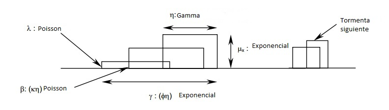

Estructuras intensas de precipitaciones tienden a no ser constantes durante su desarrollo sino a comportarse como bloques de celda que se agrupan en un clúster. La generación de estas celdas puede describirse usando un proceso de Poisson. Este enfoque hace ver natural el uso del Pulso rectangular de Bartlett-Lewis para el modelamiento estocástico de precipitaciones (Ritschel et al., 2017). El modelo original de (Rodriguez-Iturbe et al., 1987) cuenta con 5 parámetros independientes. Primeramente, los parámetros λ y β están gobernados por un proceso de Poisson y determinan los inicios de la tormenta y el de la celda respectivamente. Los parámetros μ_x, γ y η obedecen a una distribución exponencial y determinan la altura de la celda o intensidad, la duración de la tormenta total y la duración de la celda individual respectivamente. Durante la duración de una celda la intensidad μ_x se mantiene constante es por ello el nombre de pulso rectangular como se ve en la Figura. Este modelo tiene como mayor desventaja no generar los suficientes días húmedos por que adicionalmente (Rodriguez-Iturbe et al., 1988) extendieron el modelo permitiendo que el parámetro η, el cual determina la duración de la celda, varié aleatoriamente entre tormentas. Esto se logró asumiendo que los valores de η son independientes entre tormentas, distribuidos idénticamente por una distribución gamma con los parámetros de forma α y factor de escala 1/ν . Como ahora el parámetro η es remplazado por dos parámetros el modelo ahora depende ahora de 6 parámetros. A esta modificación del modelo se le conoce como el modelo de pulso rectangular Bartlett-Lewis aleatorio o BLRPM por sus siglas en ingles.
Para la calibración del juego de parámetros θ={λ ,μ_x,k ,ϕ,α,v} se utilizó el método de los momentos introducido por (Rodriguez-Iturbe, D.R. Cox, 1988), el cual es relativamente simple y practico.
Referencias
Ritschel, C., Rust, H.W., Ulbrich, U., 2017. Precipitation extremes on multiple time scales – Bartlett-Lewis Rectangular Pulse Model and Intensity-Duration-Frequency curves 2013, 1–20. doi:10.5194/hess-2017-207
Rodriguez-Iturbe, D.R. Cox, V.I., 1988. A Point Process Model for Rainfall : Further Developments. Proceeding R. Soc. 283–298. doi:10.1098/rspa.1988.0061
Rodriguez-Iturbe, D.R. Cox, V.I., 1987. Some Models for Rainfall Based on Stochastic Point Processes. Proceeding R. Soc. 269–288. doi:10.1098/rspa.1987.0039